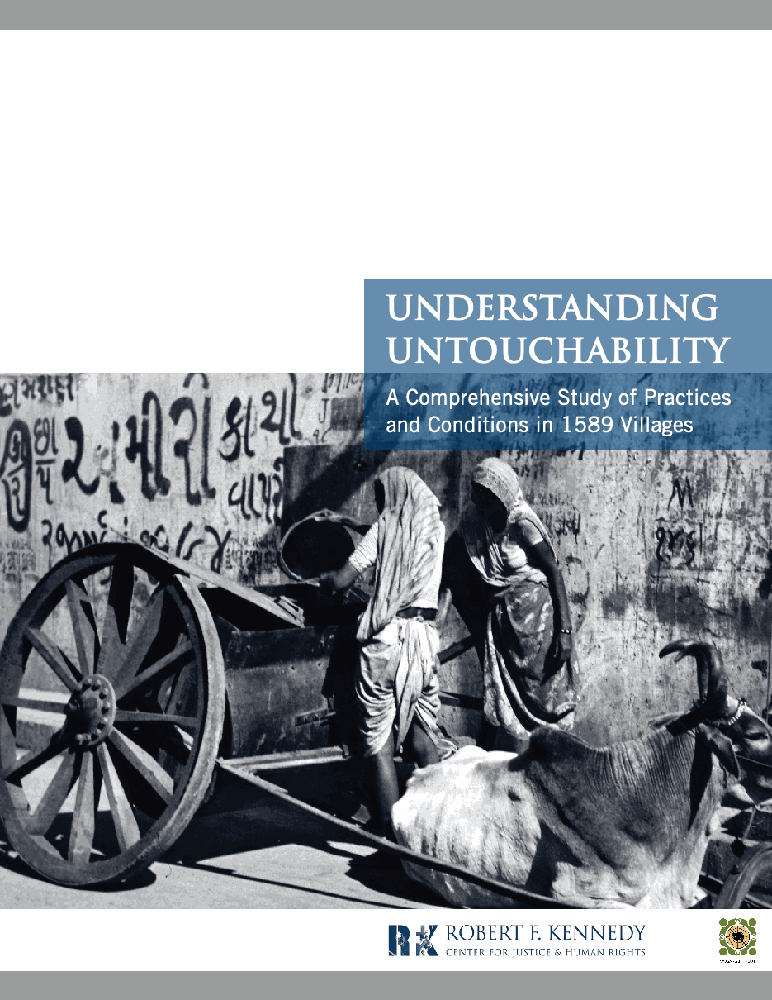

Understanding Untouchability
A Comprehensive Study of Practices and Conditions in 1589 Villages
2010
About this Report

This report presents a study of untouchability practices in 1,589 villages, drawing on 5,462 respondents in Gujarat, India. It brings together human rights advocacy, legal analysis, and social science to examine caste discrimination, both between non-Dalits and Dalits and within Dalit communities.
Begin with the preface · Read the executive summary
About this edition
This web edition follows the final 2010 report. The report’s five chapters, four appendices, author credits, acknowledgments, and endnotes are included. Links throughout the book open the corresponding page of the original report.
We have re-rendered plots, maps, and tables while maintaining fidelity to the data underlying the original report. The online format supports interactive visualizations and searchable, filterable tables, with greater clarity and resolution than the printed report. Some figures are reproduced directly from the original PDF.
The report describes conditions, institutions, and affiliations at the time of publication. Its historical wording and findings are retained.
Use the contents menu to move between chapters and the search button to find words or phrases. Wide tables scroll horizontally on smaller screens.
Reception and bibliography
This section is an addition to the original report, showing how academic and lay audiences have engaged with its findings.
Download bibliography (CSV) · Download Markdown
Compiled 1 November 2026. Coverage identified through English-language web searches, archived press clippings, author bibliographies, journal records, and book text/previews. This is a consolidated research bibliography, not a claim to have found every mention, particularly in Gujarati or inaccessible print archives.
Reception and subsequent influence
Published in 2010 after initial press coverage in December 2009, Understanding Untouchability brought systematic evidence of caste exclusion into debates about Gujarat’s development. Its reception extended from newspaper reporting and scholarly discussion to a government-commissioned review, the wider history of Navsarjan’s advocacy, and a Supreme Court judgment fourteen years later. The sections below distinguish the report’s documented uses from disputed accounts of political motivation.
The report in the Supreme Court
On 1 August 2024, the Supreme Court of India decided State of Punjab v. Davinder Singh (2024 INSC 562), upholding the constitutional permissibility of sub-classification within Scheduled Castes for reservations. Chief Justice D. Y. Chandrachud’s opinion used the report as empirical evidence that these communities are socially heterogeneous.
Paragraph 140 names the RFK Centre and Navsarjan, identifies the 1,589-village study, and discusses its findings on discrimination between Dalit subcastes. It describes exclusions from shared meals, drinking water, religious practices, and burial grounds. Footnote 166 cites Understanding Untouchability, pages 22–33. The passage appears under “Empirical evidence of heterogeneity,” following a discussion of A. M. Shah’s research in paragraph 139. Read the judgment, paragraphs 139–140 (PDF page 43).
This is a specific and consequential use of the study: evidence assembled for local advocacy helped inform constitutional reasoning about inequality within historically disadvantaged communities. The citation documents that influence; it does not amount to judicial validation of every finding or of the survey’s entire methodology.
Engagement
The tables distinguish substantive discussion from confirmed reference-list citations and institutional publicity. Summaries describe what the source says; endorsement, replication, and independent methodological validation are different things. Links are to originals where available, otherwise to the identified archive or reproduction. Some pages are intermittently inaccessible.
December 2009 articles report 1,655 villages and approximately 98,000 people represented. The final English report describes 1,589 villages and 5,462 respondents. These numbers should not be silently equated. Contemporary sources also alternate between 98 and 99 practices. Dates on surviving original pages take precedence over dates in retrospective author lists.
Original media coverage and dissemination, 2009–2010
| Source | Verified discussion relating to the report |
|---|---|
| Relevant text verified Vijaysinh Parmar. “No temple entry for dalits in Gujarat.” The Times of India, 7 December 2009. Original | Reports exclusion from temples and religious gatherings, including restrictions on sitting alongside dominant-caste participants. Identifies Navsarjan and its US collaborators and includes comments from Manjula Pradeep and Ghanshyam Shah. Challenges Gujarat’s development narrative. Uses the early 1,655-village figures. Original text verified. |
| Relevant text verified Vijaysinh Parmar. “Vibrant Gujarat? 98% Dalits have to drink tea in separate cups.” The Times of India, 8 December 2009. Original | Combines survey findings with reporting from Lodariyal near Sanand and the Tata Nano project. Describes separate drinking vessels, called Ram patra, and dependence on employers that discourages Dalit workers from protesting humiliation. Connects everyday discrimination to the limits of economic development. Original text verified. |
| Relevant text verified Vijaysinh Parmar. “Dalit kids shamed at mid-day meals.” The Times of India, 9 December 2009. Original | Reports a survey figure of 53.78% for discrimination against Dalit primary-school children in midday meals. Village interviews describe separate seating, pupils avoiding meals prepared by a Dalit cook, and a child leaving school after humiliation. Questions whether school-quality inspections addressed caste discrimination. Original text verified; percentage is the newspaper’s formulation. |
| Relevant text verified Manas Dasgupta. “Untouchability still prevalent in rural Gujarat: survey.” The Hindu, 28 January 2010. Archived clipping collection | Reports the three-year Navsarjan–RFK survey and its release by S. K. Thorat. Emphasizes continuing untouchability despite development claims and discrimination by dominant castes as well as relatively higher Dalit subcastes. Relevant text verified through archived/indexed reproduction; archive contains several publications, not just The Hindu. |
| Relevant text verified Paras K. Jha. “Untouchability is still practised in Swarnim Gujarat: Report.” DNA, 28 January 2010. Original | Covers the 27 January launch at Gujarat Vidyapith. Highlights discrimination involving tea, worship, religious services, and temples. Records favorable comments by Sukhadeo Thorat, Sudarshan Iyengar, and Indukumar Jani. Thorat endorses the study’s breadth and portrayal of social conditions. Original text verified; launch endorsement, not formal peer review. |
| Relevant text verified NT Network. “Untouchability still prevails across Gujarat: study.” The Navhind Times, 28 January 2010, 01:35. Archived clipping collection | Describes 106 Navsarjan investigators, 5,462 respondents, and 1,589 villages. Covers segregation in housing, water, worship, schools, and public events, plus discrimination between Dalit subcastes. Names Davenport and Armstrong and discusses the framework’s intended use in interventions. Archived article text verified. Original clipping says 28 January; retrospective lists say 27 January. |
| Relevant text verified “‘Untouchability’ still rife in modern India.” International Dalit Solidarity Network, 28 January 2010. Original | Summarizes restrictions on marriage, housing, water, religion, education, and medical care. Treats findings as evidence of inadequate legal implementation and challenges the assumption that untouchability is confined to remote or economically underdeveloped places. Original text verified; advocacy dissemination. |
| Relevant text verified “New India Study Finds Untouchability Pervasive Across Public and Private Life.” Subaltern Expression, 29 January 2010. Original | Presents vertical discrimination against Dalits and horizontal discrimination among Dalit subcastes. Emphasizes the project’s three-year investigation and framework for quantifying abuses. Original post verified; launch-related dissemination. Page date is 29 January, differing from retrospective lists. |
| Relevant text verified “Understanding Untouchability: A report.” Atrocity News, 29 January 2010. Original | Introduces the joint RFK–Navsarjan report favorably and links to it. Lists selected analytical snapshots concerning public services, defilement by touch, and the indexing of practices. Original post text verified; figure captions verified, not a separate empirical investigation. |
| Relevant text verified “INDIA: Understanding Untouchability.” Child Rights Information Network, 11 February 2010. Archived original | Summarizes discrimination in education, medicine, housing, and employment, including differences between Dalit subcastes. Includes the 98.4% inter-caste-marriage restriction finding. Text verified; closely overlaps IDSN dissemination and should not be counted as a wholly independent assessment. |
| Relevant text verified “Study on ‘untouchables’ can help end human rights abuses, says Notre Dame scholar.” Notre Dame News, date unconfirmed. Original | Identifies Davenport as a coauthor and presents the study as evidence of discrimination throughout everyday life. Relevant text verified; institutional publicity. Listed here for its relationship to the launch, without assigning an unverified date. |
Gujarat government–CEPT review and ensuing debate
The report’s findings challenged a public account of Gujarat’s development that left persistent caste exclusion out of view. After the original survey and the December 2009 newspaper series, the Gujarat government commissioned CEPT University—the Centre for Environmental Planning and Technology—to examine the findings. Contemporary reporting dates the commission to October 2010. In 2018, Social Justice and Empowerment Minister Ishwar Parmar told the Legislative Assembly that the government had considered Navsarjan’s report one-sided and anti-government and had asked CEPT to conduct a fact-finding survey. He said CEPT’s report was received in April 2013. The government’s explanation, reported by The New Indian Express.
The debate mattered because it concerned whose evidence would guide recognition of untouchability and the state’s response. CEPT’s five-village study drew criticism for treating discrimination as a matter of perception and for concentrating on socioeconomic conditions rather than directly examining exclusion. Navsarjan returned to the five villages and reported continuing restrictions. Questions about access to the commissioned report, pursued through Right to Information requests, made government transparency part of the controversy. Contemporary coverage of the review · Coverage of Navsarjan’s resurvey.
The positions were not uniform. In July 2013, CEPT lead researcher R. Parthasarathy publicly described Navsarjan’s study as “comprehensive and excellent” and his own study as complementary. Sociologist Ghanshyam Shah’s detailed critique supported Navsarjan’s approach, but he disclosed membership of its board. These distinctions matter: government criticism, CEPT researchers’ statements, and subsequent scholarly assessments should not be treated as a single position. The table below attributes claims about political motivation to the people making them.
| Source | Verified discussion relating to the report |
|---|---|
| Relevant text verified Vijaysinh Parmar. “Gujarat touchy over own report on untouchability.” The Times of India, 11 April 2013. Original | Connects the CEPT commission to the original survey and press coverage. Reports refusal to release the commissioned findings and official concerns about conflict, respondent safety, and employment consequences. Relevant text verified. |
| Relevant text verified Rajiv Shah. “Gujarat govt-sponsored study justifies caste discrimination as issue of perceptions.” Counterview, July 2013. Original | Criticizes CEPT’s framing of caste discrimination as perception and contrasts its approach with the 1,589-village Navsarjan survey. Explicitly connects the review to the December 2009 newspaper series. Relevant text verified; author’s critical interpretation. |
| Relevant text verified Vijaysinh Parmar. “Untouchability remains untouched in Gujarat report.” The Times of India, 19 July 2013. Original | Contrasts CEPT’s five villages with Navsarjan’s much larger investigation and reports criticism that CEPT sidestepped the central issue. Quotes R. Parthasarathy calling Navsarjan’s study “comprehensive and excellent” and describing CEPT’s work as complementary. Original text verified; central evidence for distinguishing CEPT’s public position from government characterizations. |
| Relevant text verified “Navsarjan resurvey counters Gujarat govt study claim: Untouchability a matter of perception.” Counterview, 15 August 2013. Original | Reports Navsarjan’s return to CEPT’s five villages and continuing restrictions involving temples, water, housing, shops, schools, and festivals. Relevant text verified; follow-up evidence collected by Navsarjan, not an independent replication. |
| Relevant text verified “Untouchability still rampant in villages: Navsarjan report.” The Times of India, 18 August 2013. Original | Reports the resurvey of the five CEPT villages, explicitly identifying it as a response to the commissioned study following Understanding Untouchability. Original relevant text verified; separate newspaper coverage of the same Navsarjan follow-up. |
| Relevant text verified “In a somersault, Gujarat govt says it never wanted to review NGO untouchability study.” Counterview, August 2013. Original | Records the government’s statement that CEPT was asked to suggest ways of removing discrimination, rather than disprove Navsarjan’s study. Relevant text verified; useful for the changing descriptions of the commission’s purpose. |
| Relevant text verified Ghanshyam Shah. “Ignoring untouchability: Gujarat govt-sponsored study’s casual approach.” Counterview, 13 November 2013. Original | Detailed rejoinder to CEPT’s methodology and framing. Defends the applied purpose and preparation of Navsarjan’s research and relates its findings to previous studies. Essay text verified. Shah discloses Navsarjan board membership and acknowledges comments by participants; an assessment by a scholar affiliated with Navsarjan. |
| Relevant text verified “Top sociologist accuses Gujarat govt-sponsored study for ignoring untouchability.” Counterview, December 2013. Original | Summarizes Shah’s argument that CEPT substituted socioeconomic description for investigation of untouchability. Relevant text verified; related coverage of the preceding essay, not another independent evaluation. |
| Relevant text verified Subhash Gatade. “Modi and The Art of ‘Disappearing’ of Untouchability.” Kafila, 12 February 2014. Original | Uses the CEPT controversy to argue that the government tried to neutralize uncomfortable evidence. Discusses the difference in survey scale and draws on Rajiv Shah and Ghanshyam Shah’s critiques. Relevant text verified. Related version: Countercurrents, “How NaMo Has ‘Disappeared’ Untouchability In Gujarat?” Count as related dissemination, not two independent investigations. |
| Relevant text verified Subhash Gatade. “Silencing Caste, Sanitising Oppression: Understanding Swachh Bharat Abhiyan.” Economic & Political Weekly 50(44), 31 October 2015. Article PDF | Situates the Navsarjan–CEPT controversy within a critique of sanitation policy that obscures caste. Treats the original survey as substantive evidence and criticizes the commissioned review’s framing and limited coverage. Relevant article text verified; scholarly commentary, not replication. An earlier related public essay appeared on 10 October 2014 and should not be mistaken for the EPW publication date. |
| Relevant text verified Rajiv Shah. “Dalit outrage? BJP in Gujarat appears ‘relaxed’.” The Times of India, True Lies blog, July 2016. Original | Revisits the survey and CEPT dispute following the Una violence. Rejects the characterization of untouchability as merely a matter of perceptions. Relevant text verified; political commentary. |
| Relevant text verified “Gujarat government refuses to table survey report on untouchability.” The New Indian Express, 7 March 2018. Original | Records the continued refusal to table CEPT’s report in the assembly. Reports the minister’s characterization of Navsarjan’s report as one-sided and CEPT’s commission as fact-finding. Relevant text verified; evidence of the dispute’s persistence. |
| Relevant text verified Rajiv Shah. “Gujarat govt doesn’t want to reveal: Cept Univ untouchability study suggested massive economic discrimination.” Counterview, March 2018. Original | Argues that CEPT’s own data document considerable caste inequalities in land, employment, and livelihoods despite its reservations about the original survey’s framing. Relevant text verified; distinguishes empirical findings from interpretation. |
| Relevant text verified Subhash Gatade. “How to Make Caste Discrimination Disappear From Universities.” NewsClick, 25 April 2023. Original | Reuses the Gujarat episode as a precedent for institutional denial of caste discrimination. Explicitly identifies Understanding Untouchability and the subsequent commissioned study. Relevant text verified; later interpretive reuse of the controversy. |
Academic books, journal articles, and scholarly commentary
| Source | Verified discussion relating to the report |
|---|---|
| Relevant text verified Supreme Court of India. State of Punjab v. Davinder Singh, 2024 INSC 562, 1 August 2024; opinion of Chief Justice D. Y. Chandrachud, paragraph 140 and footnote 166. Judgment, PDF page 43 | Explicitly cites the report’s evidence of discrimination among Dalit subcastes in explaining social heterogeneity within Scheduled Castes. Primary judgment text and report reference verified. |
| Relevant text verified Kalpana Kannabiran. Tools of Justice: Non-discrimination and the Indian Constitution. Routledge India, 2012, especially pp. 239–240; bibliography pp. 489–490. Publisher · Searchable text reproduction used for passage verification | Substantive passage verified. In the conclusion to the chapter on untouchability and personal liberty, describes the study’s index, 197 variables, and distinction between vertical and horizontal discrimination. Praises its detailed ethnographic approach and argues that it helps map Article 17’s scope beyond dominant-caste discrimination to discrimination among Dalit communities. Also uses the report as the chapter’s opening epigraph. Citation is under Navsarjan and RFK Centre. Substantive concluding discussion: printed pp. 239–240. |
| Citation verified · limited text Anand Teltumbde. Dalits: Past, Present and Future, 2nd ed. Routledge India, 2020. Publisher · DOI | Reference passages verified in indexed publisher preview; complete surrounding discussion unavailable. Introduction p. 13, notes 22 and 25 identify the joint Navsarjan–RFK survey and cite the full report. Another preview note, numbered 12, cites it again. Establishes use as an empirical reference on continuing untouchability, but does not justify a detailed claim about methodological endorsement. The earlier 2016/2017 edition remains separately unverified; do not double-count editions as distinct engagements. |
| Relevant text verified Anand Teltumbde. “SC/STs and the State in the Indian Constitution.” Republic Day special lecture, University of Mysore; circulated 6 February 2012, p. 12 and note 18. Full lecture | Full relevant passage verified. Groups the 1,589-village Navsarjan–RFK survey with other empirical studies showing substantial persistence of untouchability despite constitutional abolition. Uses this evidence in an argument about the failure of protective measures. |
| Relevant text verified Christian Davenport and Priyamvada Trivedi. “Activism and awareness: Resistance, cognitive activation, and ‘seeing’ untouchability among 98,316 Dalits.” Journal of Peace Research 50(3), 2013. Publisher and DOI | Abstract and report citation verified. Cites Understanding Untouchability under Macwan-first authorship. Uses data concerning 98,316 Dalits in 1,589 villages to study associations between nonviolent activism and awareness of discrimination. Research by a report coauthor; not independent validation. Its population figure should not be equated with the final report’s respondent count. |
| Citation verified · limited text Rameshkumar K. Ravaliya. “Untouchability in Rural Area of Gujarat State.” International Journal of Reviews and Research in Social Sciences 11(2), 2023, pp. 143–148. Journal record · DOI | Abstract and reference 13 verified. References the report as Martin Macwan and others, RFK Centre and Navsarjan Trust. Article studies contemporary untouchability in rural Junagadh. The accessible record establishes citation and article scope, but does not demonstrate a specific assessment of the report’s findings. |
| Citation verified · limited text “Understanding the Position of Dalits in Gujarat.” The Creative Launcher, 2018. Journal record | Indexed journal reference verified; passage-level use unavailable. Explicitly cites Davenport and Armstrong (2010), including eSocialSciences identifier 2410. Relevant to the two-author attribution route. The full-text discussion remains unverified. |
| Relevant text verified G. B. Reddy and Pavan Kasturi. “Decoding Sub-Classification in SCs.” SCC Times, 23 September 2024. Full commentary | Relevant passage and note 40 verified. Discusses RFK–Navsarjan evidence of discrimination within Dalit communities concerning food, water, and religion, citing report pp. 22–33. Uses it in discussing heterogeneity among Scheduled Castes and sub-classification. Included as legal scholarly commentary; this bibliography does not independently adjudicate its account of the judgment. |
| Relevant text verified University of Notre Dame. “Understanding Untouchability: An Examination of 1,589 Gujarati Villages.” Lecture announcement, 5 April 2011. Announcement | Announcement verified. Advertises Davenport’s presentation of the investigation and measurement approach. Academic dissemination rather than a published review. |
Later media and institutional references
| Source | Verified discussion relating to the report |
|---|---|
| Relevant text verified “The Daily Fix: A Dalit lynched for not collecting garbage is a reminder of Gujarat’s caste apartheid.” Scroll.in, 2018. Original | Uses the 2010 Navsarjan study to contextualize continuing violence and the state’s response to evidence of discrimination, including accusations that the organization maligned Gujarat. Relevant text verified. |
| Relevant text verified “‘There Have Been Even More Atrocities Against Dalits and Adivasis Since 2014…’” NewsClick, 2019. Interview · Related Sabrang version | Interview with Martin Macwan recalling the 2010 mapping of untouchability. The Sabrang version specifically discusses restrictions on temple entry and the study’s use in legislative debates. Relevant text verified; participant testimony and related dissemination. |
| Relevant text verified “Dalits, Adivasis Demand Independence From Oppression, Exploitation, Corporate Plunder.” Liberation, date unconfirmed. Original | Names Understanding Untouchability in a political fact-finding account and invokes its evidence to contextualize oppression in Gujarat. Relevant text verified; claims about government complicity are the article’s interpretation. |
| Relevant text verified Navsarjan Trust. “Digitization of Research and Documentation.” Undated. Institutional account | Describes the survey and Gujarati edition, Abhadchchedni Bhal, as documentation of continuing untouchability. Relevant text verified; publication history and self-description. |
| Relevant text verified Christian Davenport, Radical Information Project. “Untouchability.” Undated. Research account | Retrospective on study development, measurement, launch, government response, and related research. Links press reports, the commissioned CEPT document, and book references. Text verified; author’s account and discovery aid, not independent reception. |
| Record verified EconBiz / RePEc. “Understanding Untouchability: A Comrehensive Study of Practices and conditions in 1589 villages.” February 2010. Record | Catalogue metadata verified. Lists Davenport and Armstrong, eSocialSciences, and Working Papers. Useful for reconciling attribution variants; not substantive reception. |
| Record verified ecoi.net. Report record, 11 February 2010. Record | Metadata verified. Indexes the report under Navsarjan Trust, published through CRIN, as an analytical report about Dalits. Documents dissemination into country-of-origin information resources; not a separate review. |